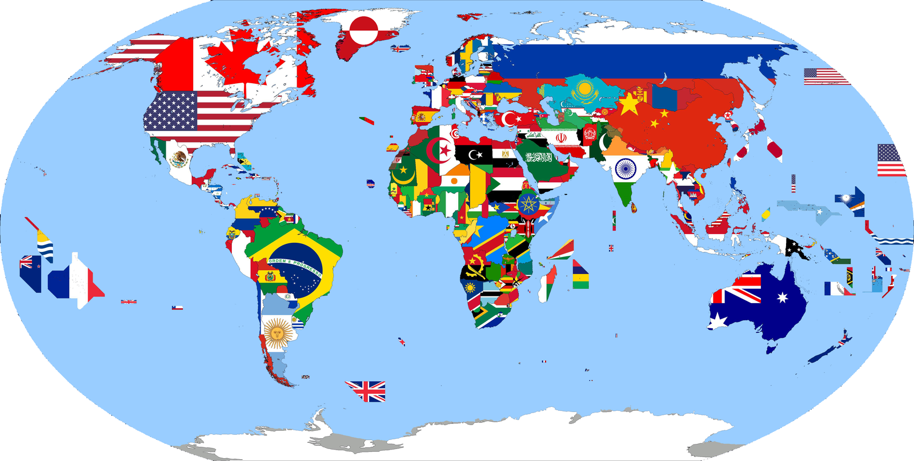

CHECH MY LATEST PORTFOLIO ITEMSNew York is 33-41 entering play Sunday, 12 games out of first place in the N.L. East. They’re also 12.5 games out of second wild card spot in the National League, and they would have to jump over teams like the Cardinals, Marlins, Pirates and Cubs to get back into postseason contention. Let alone the Washington Nationals, leaders in their own division. |
OFFER TOP NOTCH QUALITYNew York is 33-41 entering play Sunday, 12 games out of first place in the N.L. East. They’re also 12.5 games out of second wild card spot in the National League, and they would have to jump over teams like the Cardinals, Marlins, Pirates and Cubs to get back into postseason contention. Let alone the Washington Nationals, leaders in their own division. |
FOLLOW ME ON TWITTERNew York is 33-41 entering play Sunday, 12 games out of first place in the N.L. East. They’re also 12.5 games out of second wild card spot in the National League, and they would have to jump over teams like the Cardinals, Marlins, Pirates and Cubs to get back into postseason contention. Let alone the Washington Nationals, leaders in their own division. |